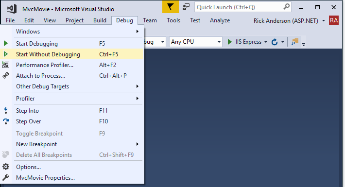

Getting started with ASP.NET Core MVC and Visual Studio
This tutorial will teach you the basics of building an ASP.NET Core MVC web app using Visual Studio 2017. This tutorial teaches ASP.NET Core MVC with controllers and views. Razor Pages is a new alternative in ASP.NET Core 2.0, a page-based programming model that makes building web UI easier and more productive. We recommend you try the Razor Pages tutorial before the MVC version. For a Razor Pages version of this tutorial, see Razor Pages.
There are 3 versions of this tutorial:
- macOS: Create an ASP.NET Core MVC app with Visual Studio for Mac
- Windows: Create an ASP.NET Core MVC app with Visual Studio
- macOS, Linux, and Windows: Create an ASP.NET Core MVC app with Visual Studio Code
For the Visual Studio 2015 version of this tutorial, see the VS 2015 version of ASP.NET Core documentation in PDF format.
Install Visual Studio and .NET Core
Install the following:
- .NET Core 2.0.0 SDK or later.
- Visual Studio 2017 version 15.3 or later with the ASP.NET and web development workload.
Create a web app
From Visual Studio, select File > New > Project.

Complete the New Project dialog:
- In the left pane, tap .NET Core
- In the center pane, tap ASP.NET Core Web Application (.NET Core)
- Name the project "MvcMovie" (It's important to name the project "MvcMovie" so when you copy code, the namespace will match.)
- Tap OK

Complete the New ASP.NET Core Web Application (.NET Core) - MvcMovie dialog:
- In the version selector drop-down box select ASP.NET Core 2.-
- Select Web Application(Model-View-Controller)
- Tap OK.


Visual Studio used a default template for the MVC project you just created. You have a working app right now by entering a project name and selecting a few options. This is a simple starter project, and it's a good place to start,
Tap F5 to run the app in debug mode or Ctrl-F5 in non-debug mode.

- Visual Studio starts IIS Express and runs your app. Notice that the address bar shows
localhost:port#and not something likeexample.com. That's becauselocalhostis the standard hostname for your local computer. When Visual Studio creates a web project, a random port is used for the web server. In the image above, the port number is 5000. When you run the app, you'll see a different port number. - Launching the app with Ctrl+F5 (non-debug mode) allows you to make code changes, save the file, refresh the browser, and see the code changes. Many developers prefer to use non-debug mode to quickly launch the app and view changes.
- You can launch the app in debug or non-debug mode from the Debug menu item:

- You can debug the app by tapping the IIS Express button

The default template gives you working Home, About and Contact links. The browser image above doesn't show these links. Depending on the size of your browser, you might need to click the navigation icon to show them.

If you were running in debug mode, tap Shift-F5 to stop debugging.
In the next part of this tutorial, we'll learn about MVC and start writing some code.